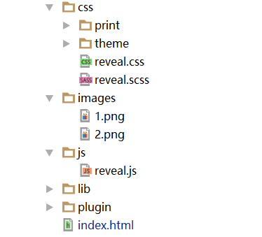
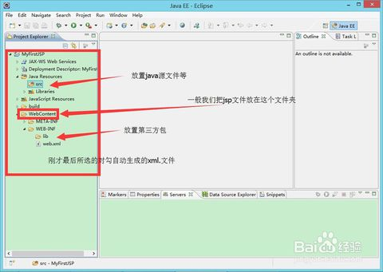
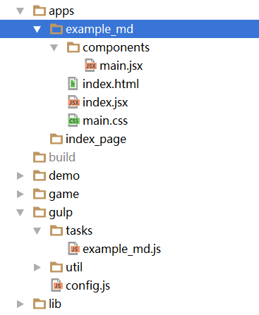
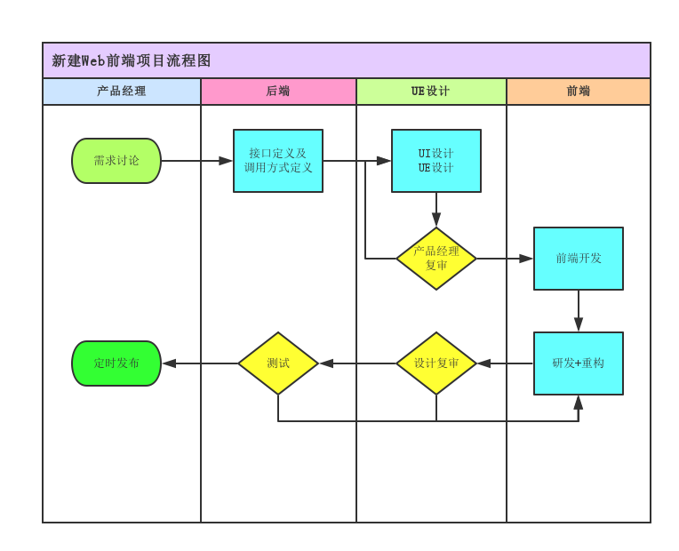
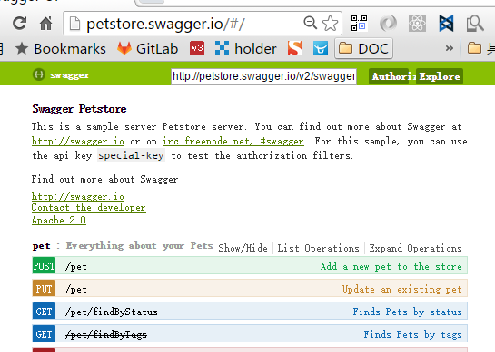

金融工场Web前端
Web前端的职责
最直接的用户体验
快速迭代 + 准时发布

工场的现状
-
后端项目多
主站, 论坛, 用户中心, 微信, 商城... -
前端没源码
SVN里才是最新代码 但是, 前端却没有源码
前端面临着空手改代码的难题 -
传统的开发方式
SVN + MVC + 后端渲染 + 静态资源随项目代码打包发布
Web前端需要革新
目前的前端开发流程

单个项目从启动到结束大约需要一个月
现在的主要问题
- 没有源码 或 只有部分源码
- 后端跨度大 同时存在多个后端 多种前端模板
- 电脑配置差?
- 不能预览最终效果
- 没有高效的开发方式
- 没有形成Web前端的开发规范
- 研发周期之外的项目难以找到负责人
如何解决
思路一: 前端只维护所有纯静态页面
思路二: 前端跟着项目走
思路三: 前端独立项目
思路一: 前端只维护所有纯静态页面
前端开发一个纯静态页面, 然后交给后端负责[前端任务结束] 思路二: 前端跟着项目走
前端持有后端项目SVN权限, 本地运行服务后修改代码 思路三: 前端独立项目
前端自己持有源码, 打包项目, 分发给不同的后端项目 | 思路一 维护静态页 |
思路二 跟着项目走 |
思路三 独立成项目 |
|
|---|---|---|---|
| 项目更新速度 | 慢 | 中 | 快 |
| 后端对接难度 | 困难 | 普通 | 简单 |
| 开发效率 | 高 | 低 | 高 |
| 自动化程度 | 低 | 中 | 高 |
| 迁移成本 | 低 | 高 | 高 |
短期计划 (月计划)
规范开发流程
整合项目代码
试水一个独立的前端项目
中期计划 (季度计划)
使用 Git 管理前端项目代码
完善前端组件库
升级前端开发方式及工具
改善前后端数据交互方式
前端目标(长期计划)
做好用户交互功能, 重在用户体验
体验一下谷歌的设计规范目标: 成为一个有效率有担当的前端团队
Web前端项目开发流程(移动端)
新开发流程需要什么
RESTful接口 数据流才是用户操作的主线
新的思路 MVC没有过时, 但已经不能响应变化了
可视化的流程 项目的每一步都应该让所有人看到
模块化 清晰的模块和功能是大型项目稳定的保障
独立项目 前端不再依赖后端,专业的工具出专业的效果
接口工具
看得见的接口, 让开发人员在使用的时候面对真是的数据
不用担心接口返回与文档描述不同, 接口是否正确一试便知
推荐工具 swagger
SAPs 单页面应用
用户进入某个功能, 所有的操作都在同一个页面, 没有刷新和调整, 最大限度的减少了网络延时
依靠js框架进行页面局部刷新, 即保证了交互, 又保证了速度, 据说简单操作的效率可以媲美Native
同一个页面内数据更容易控制, 避免跨页面传递数据的问题
更容易嵌入到APP或微信中
React的使用
import React from 'react';
import ReactDOM from 'react-dom';
import injectTapEventPlugin from 'react-tap-event-plugin';
import Main from './components/main.jsx'; // Our custom react component
//Needed for onTouchTap
//Can go away when react 1.0 release
//Check this repo:
//https://github.com/zilverline/react-tap-event-plugin
injectTapEventPlugin();
// Render the main app react component into the app div.
ReactDOM.render( <Main/> , document.getElementById('app'));
ES6 + 预编译 + React
它的优秀之处在于: 使复杂应用的开发变为可能
Web前端的技能树
HTML5 + CSS3 + JavaScript
Node.js + npm
ECMAScript6(2015)
React.js
Gulp工具库
Template(swig + jade ...)
Ajax + WebSocket (DataFlow)
参考资料
Material Design设计规范 淘宝前后端分离实践React 官网
React 改变了什么
Angular 文档